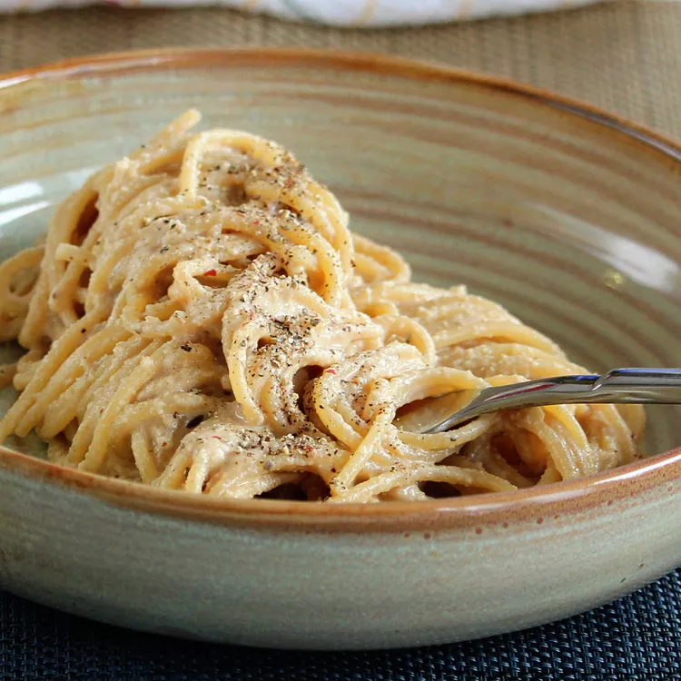

Vegan Cacio e Pepe
Total time: 35 mins

Ingredients
- ½ cup raw cashews
- 1 (8 ounce) package spaghetti
- 1 teaspoon miso paste
- ½ teaspoon coarsely ground black pepper, divided
- 3 tablespoons nutritional yeast
- 1 teaspoon extra-virgin olive oil
Steps
- Soak cashews in boiling water. Set aside for at least 10 minutes.
-
Bring a large pot of lightly salted water to a boil. Cook spaghetti in
the boiling water, stirring occasionally, until tender yet firm to the
bite, about 12 minutes.
-
Meanwhile, drain the cashews and blend until creamy. Add nutritional
yeast, miso, and 1/4 teaspoon coarse ground black pepper to the cashew
cream. Add a bit of pasta water to thin it out as needed.
-
Drain the spaghetti, reserving 1 cup of pasta water. Mix the spaghetti
and sauce together, adding reserved pasta water if needed. The
consistency should be thick enough that it will stick to the pasta.
Plate and top each serving with olive oil and remaining black pepper.
Serve immediately.